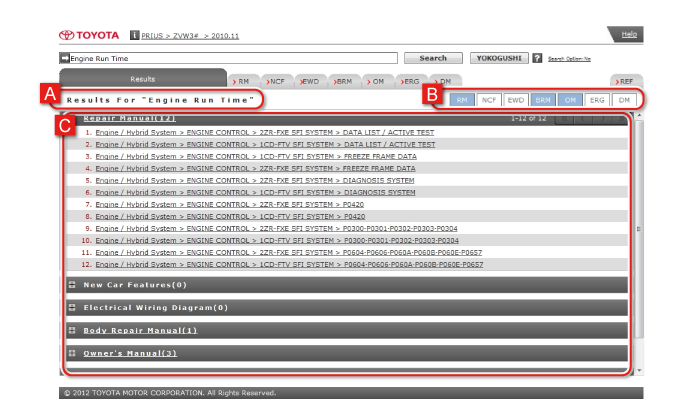

Manuals can be searched using keywords or YOKOGUSHI.
With keyword search, input keywords such as part names and system names, to search for manuals that include those keywords.
(The search does not include common manuals.)
With YOKOGUSHI, a diagnostic code is input to search for related information from the Repair Manual, New Car Features, and Electrical Wiring Diagrams.
When searching using a diagnostic code, there are the following differences between keyword searches and YOKOGUSHI.
|
Search method
|
Manuals and search content covered by searches
|
| Keyword search | Search in the Repair Manual for the diagnostic procedure for a diagnostic code |
| YOKOGUSHI search | Search in the Repair Manual, New Car Features, and Electrical Wiring Diagrams for information related to fault diagnosis from a diagnostic code |
Search results from a keyword search or YOKOGUSHI are listed in the Results (search results) tab. Select the item you want to check in the search results list, to display the corresponding content.
For details, see How to Read Search Results.
It is simple to open manual content from the search results for a keyword.
Input the keyword and click on Search.
HINT
|
Click on the link for the item you want to check. |
Alphanumeric keywords can be selected from the Index.
| 1 | Alphanumeric tab Alphabetical and numerical index characters are displayed. |
|---|---|
| 2 | Index List The list corresponding to the index character selected on the alphanumeric tab is displayed. |
Click on the index character. |
Select a keyword from the Index List and click on OK.
|
When using YOKOGUSHI, a diagnostic code can be input to search for related information from the Repair Manual, New Car Features, and Electrical Wiring Diagram.
Input the diagnostic code and click on YOKOGUSHI.
HINT
|
Click on the link for the item you want to check. |
Search results are displayed in the Results (search results) tab.
Click on the link for the item you want to check, to display the corresponding content.

| A | Search result level For a keyword search, search “Results For “***”” is displayed (where *** is the keyword). For YOKOGUSHI “YOKOGUSHI Results For “***”” is displayed (where *** is the diagnostic code). |
|---|---|
| B | Manual label This displays whether there is a search result in each manual. It is displayed in blue if there is one or more search hits, and in white if there are no hits. |
| C | Search results The number of search results in each manual and the search result items are displayed. Items are displayed in the sequence categories, sections, titles, contents. |